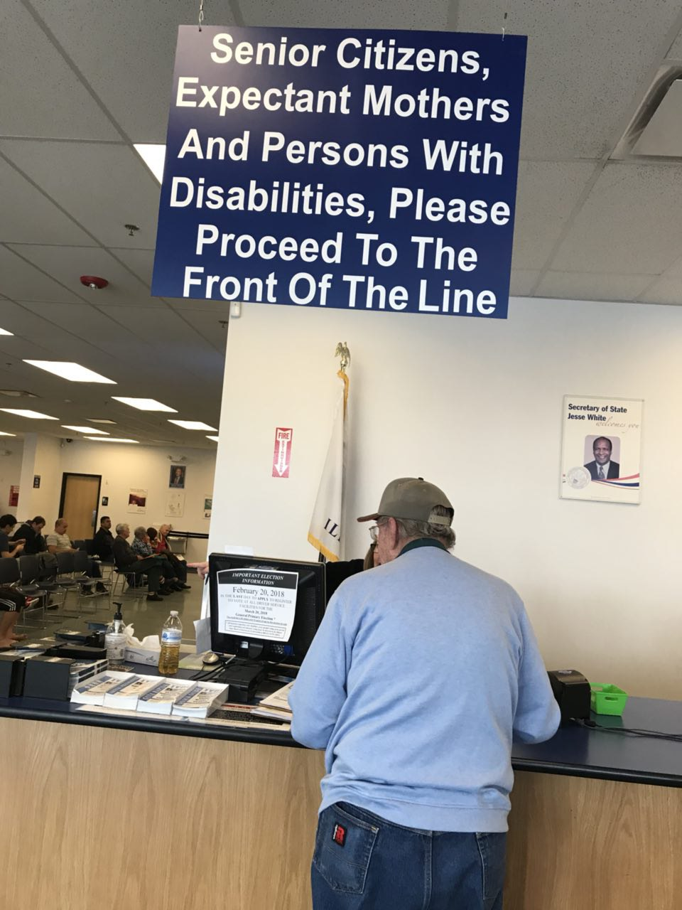
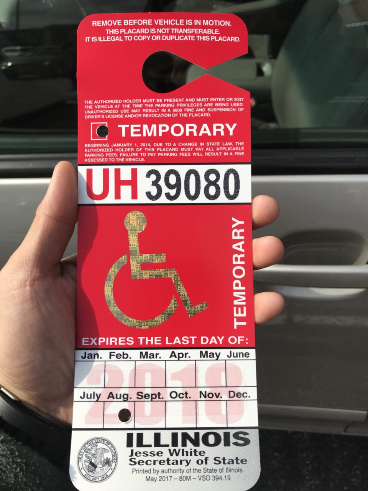

Day 6: Alive
Let's start off with some spoken word 🔥... One of my favorites
Today I milked my injury for every last drop it's worth...
You can bet I cut the whole DMV line 😂

♿️ -> 🚗🏆

Ignite bible study 🔥👓👻

Updates:
- First follow up visit went well, better understood my limitations and the healing process
- Full mobility without crutches, keep knee at full extension
- Quad strengthening has been going well, SLRs without brace
- Leg aches and is sore at night after weightbearing
🙌
- Successful surgery follow-up appointment
- Convincing the little sister to go to Ignite 🔥
- Handicap parking permit is more clutch than a stick-shift
- This Gameready ❄️machine was and is a GAMECHANGER for my recovery
- Less than a week and I'm crutches-free
🙏
- Guatemala mission trip students and the host-families
- Continued physical and bodily healing for family
- A solution to food intolerances in me and my family
- High schoolers who want to know the Lord
- Everyone affected by the Parkland shooting
For those who want the spoken word transcript:
The following are true stories.
May 26th 2003 Aron Ralston was hiking, a boulder fell on his right hand. He waited four days, then amputated his arm with a pocket knife.
On New Year’s Eve, a woman was bungee jumping in Zimbabwe. The cord broke, she then fell into a river and had to swim back to land in crocodile infested waters with a broken collarbone.
Claire Champlin was smashed in the face by a five pound watermelon being propelled by a slingshot.
Matthew Brobst was hit by a javelin.
David Striegl was punched in the mouth. By a kangaroo.
The most amazing part about these stories is when asked about the experience they all smiled, shrugged, and said “I guess things could have been worse.”
So go ahead.
Tell me that you’re having a bad day.
Tell me about the traffic. Tell me about your boss. Tell me about the job you’ve been trying to quit for the past four years. Tell me the morning is just a town house burning to the ground and the snooze button is a fire extinguisher. Tell me the alarm clock stole the keys to your smile, drove it into 7:00 AM, and the crash totaled your happiness.
Tell me! Tell me!
Tell me, how blessed are we to have tragedies so small it can fit on the tips of our tongues?
You see, when Evan lost his legs he was speechless. When my cousin was assaulted, she didn’t speak for forty eight hours. When my uncle was murdered, we had to send out a search party to find my father’s voice.
Most people have no idea that tragedy and silence have the exact same address.
When your day is a museum of disappointments hanging from events that were outside of your control, when you find yourself flailing in an ocean of “Why is this happening to me?”, when it feels like your guardian angel put in his two week notice two months ago and just decided not to tell you, when it feels like God is just a babysitter that’s always on the phone, when you get punched in the esophagus by a fistful of life, remember that every year two million people die of dehydration so it doesn’t matter if the glass is half full or half empty, there’s water in the cup.
Drink it, and stop complaining.
Muscle is created by repeatedly lifting things that have been designed to weigh us down. So when your shoulders feel heavy, stand up straight and lift your chin – call it exercise. When the world crumbles around you, you have to look at the wreckage and then build a new one out of the pieces that are still here.
Remember, you are still here.
The human heart beats approximately four thousand times per hour.
Each pulse, each throb, each palpitation is a trophy engraved with the words “You are still alive”.
You are still alive.
Act like it.